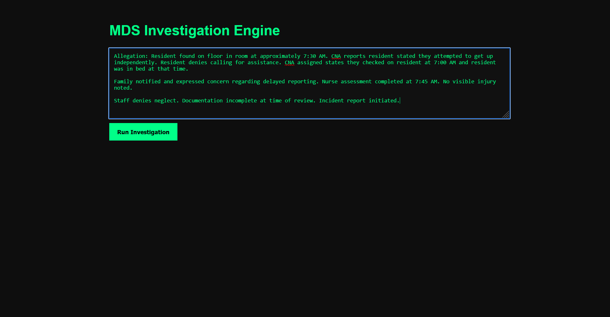
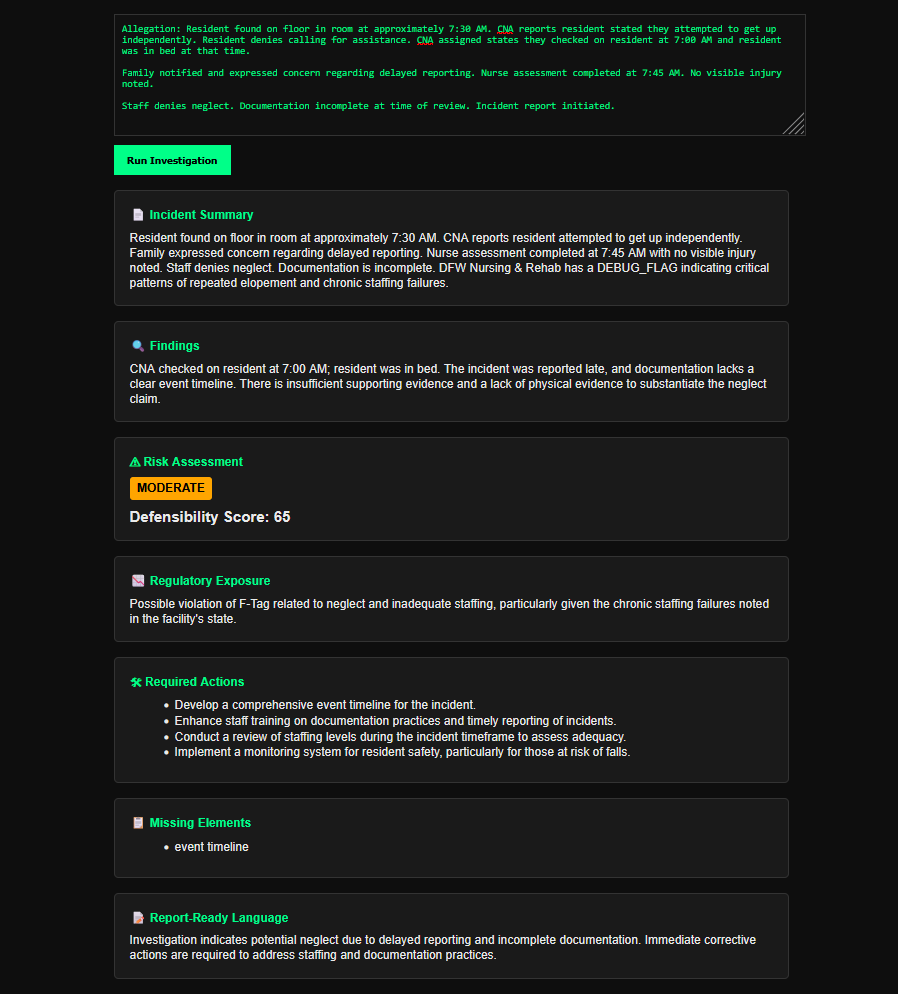

Real Incident Narrative
Administrators often begin with unstructured notes, witness statements, chart details, notifications, and conflicting accounts.

Structure incident narratives, statements, timelines, and findings into defensible investigation records.
Administrators often begin with unstructured notes, witness statements, chart details, notifications, and conflicting accounts.

Maven helps organize timelines, evidence, gaps, findings, and corrective actions into a reviewable investigation record.

Bring timeline discipline, evidence organization, and corrective-action follow-through into incident review.